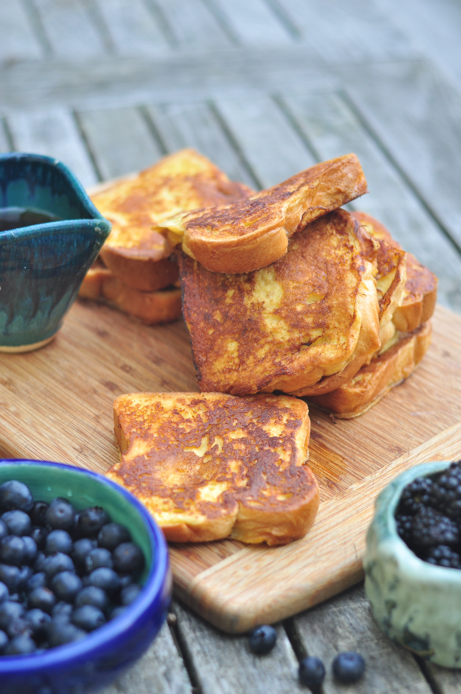

Toast, but from France
- Prep: 10 mins
- Cook: 20 mins
- Total: 30 mins
- Servings: 12
- Yield: 12 slices

Ingredients
- ¼ cup all-purpose flour
- 1 cup milk
- 1 pinch salt
- 3 eggs
- ½ teaspoon ground cinnamon
- 1 teaspoon vanilla extract
- 1 tablespoon white sugar
- 12 thick slices bread
Steps
- Measure flour into a large mixing bowl. Slowly whisk in the milk. Whisk in the salt, eggs, cinnamon, vanilla extract and sugar until smooth.
- Heat a lightly oiled griddle or frying pan over medium heat.
- Soak bread slices in mixture until saturated. Cook bread on each side until golden brown. Serve hot.